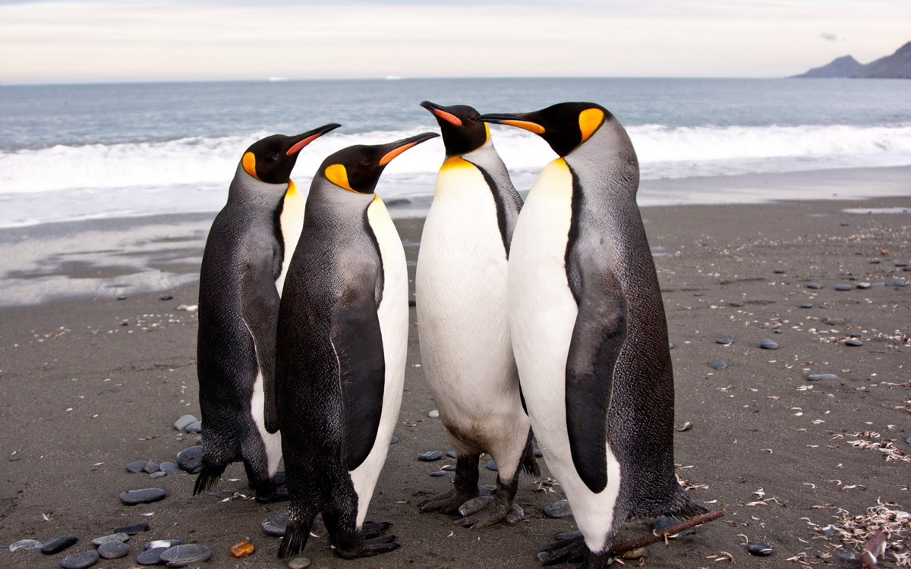

La împerecheri
Băieți, zise cel mai barosan
Mâine pe ghețarul mișcător
Unde ne-ntâlnim an de an
Pentru ziua împerecherilor
Putem merge și pe gheață
Putem merge și sub apă
Unu doi trei și haideți
Cine poate să mă-ntreacă?
Bucuroși, nevoie mare
Iatâ-i la marea întâlnire
În pereche fiecare
Într-o mare veselie!
Vasile Groza
Apare și în: Poezii cu animale.